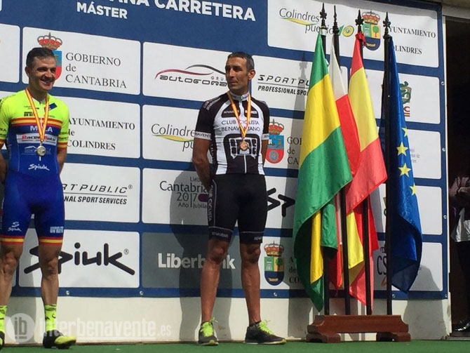
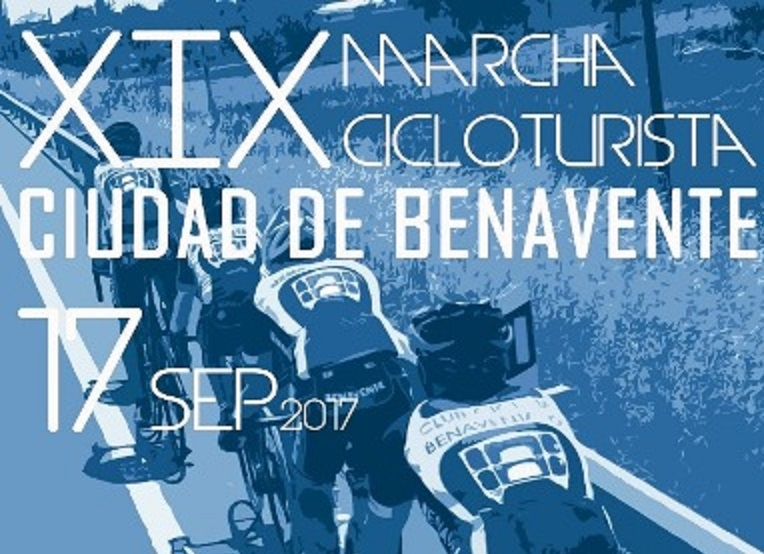
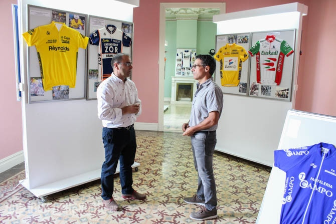
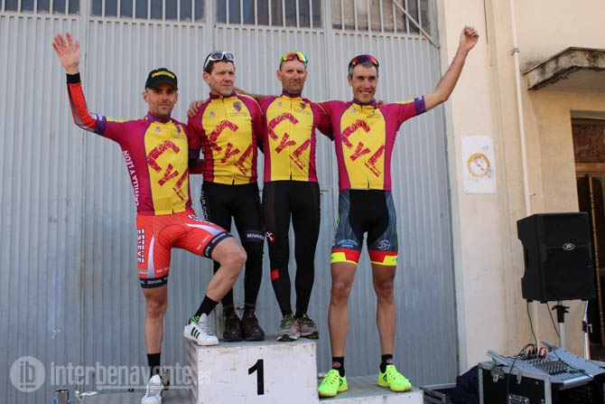
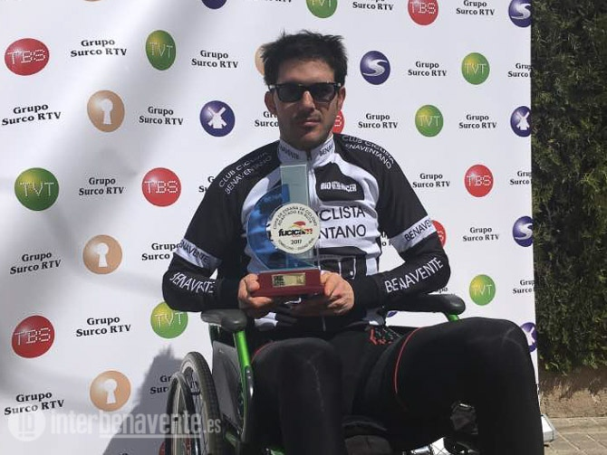
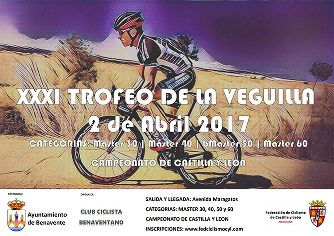

El corredor de Santa Cristina de la Polvorosa, perteneciente al Club Ciclista Benaventano consiguío subirse al podium ayer domingo en la localidad cántabra de Colindres, donde se celebraba este campeonato de carretera master

El Club Ciclista Benaventano presenta la XIX edición de esta clásica marcha cicloturista que recorre la comarca de Benavente. Se celebrará el próximo 17 de septiembre sobre un recorrido de 105 Km, recorrerá parte de los valles del Esla y del Tera

El Club Ciclista Benavente con la Colaboración del Ayuntamiento de Benavente han organizado esta muestra en el Centro Cultural Soledad González

Un total de 108 ciclistas inscritos han participado en la trigésimo primera edición del Trofeo La Veguilla que organiza el Club Ciclista Benavente con la colaboración del Ayuntamiento de Benavente y de la Federación de Ciclistas de Castilla y León.

El deportista benaventano ha participado este fin de semana en Tomelloso en este campeonato en el que se dieron cita 110 deportistas, referentes mundiales del paraciclismo

La prueba se celebrará el 2 de abril en Benavente, con la novedad de que este año será Campeonato de Castilla y León de las categorías Master.